Fox 36 Damper Dyno Data
Updated 03-05-2026
This post is shock "dyno" data of two fox 36 dampers
Close-to-OEM Baseline Damper Data
Compression adjuster sweep (only useful as lockout)
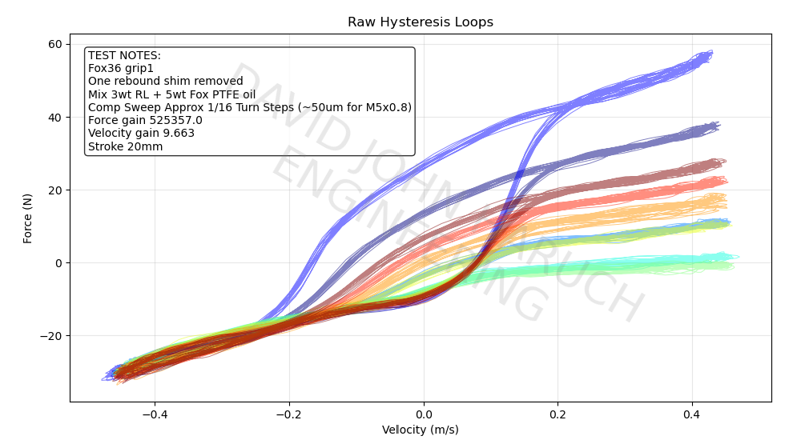
Rebound clicker sweep
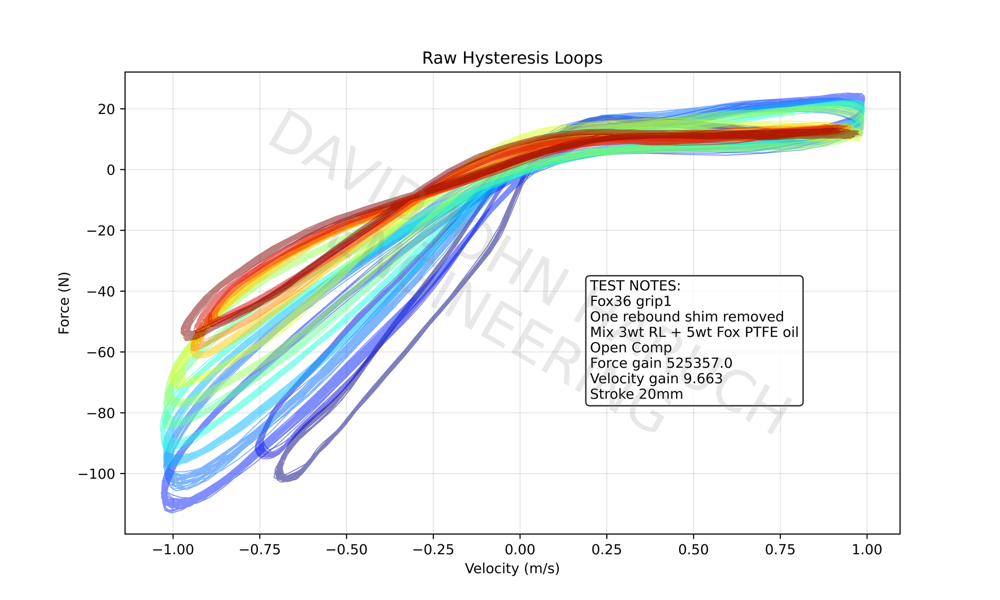
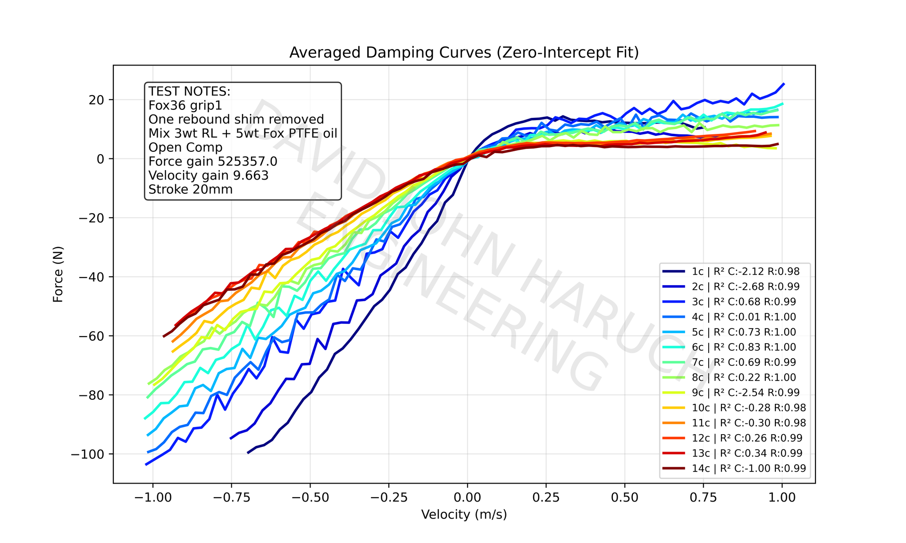
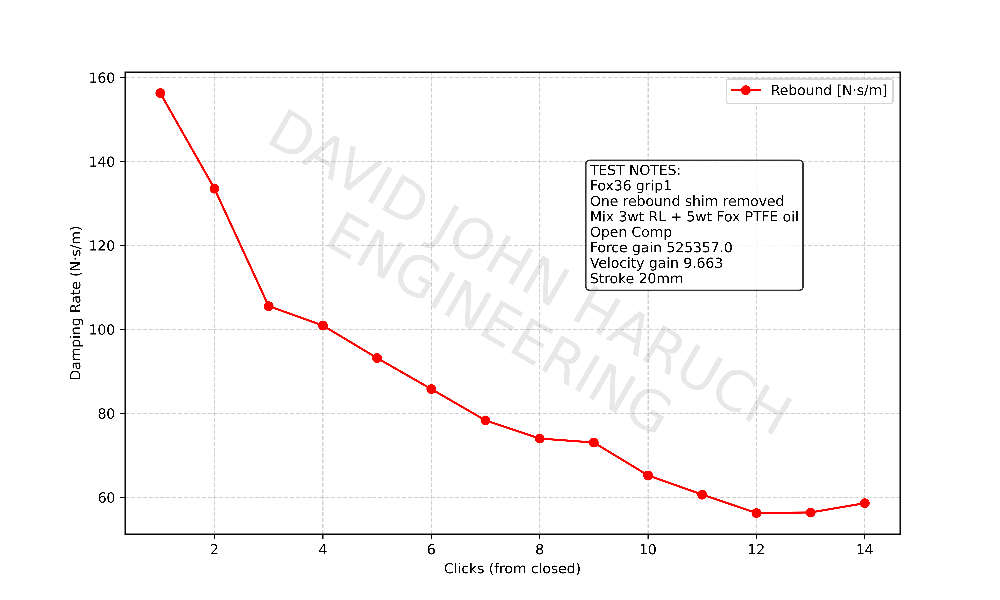
Coulomb Friction
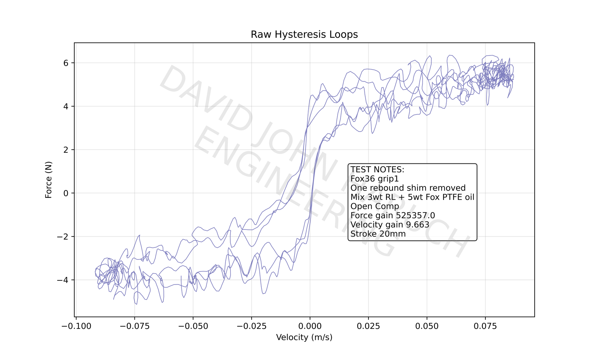
Modified Basevalve Damper Data
This damper is modified with a adjustable LSC needle base valve assy, see this web-page
fx36_gripdamper.htmlCompression adjuster sweep (more useful than stock)
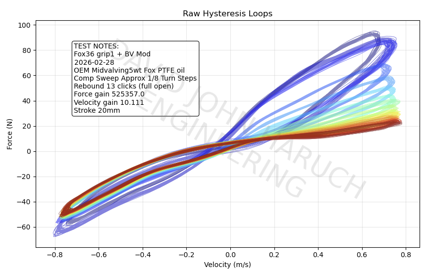
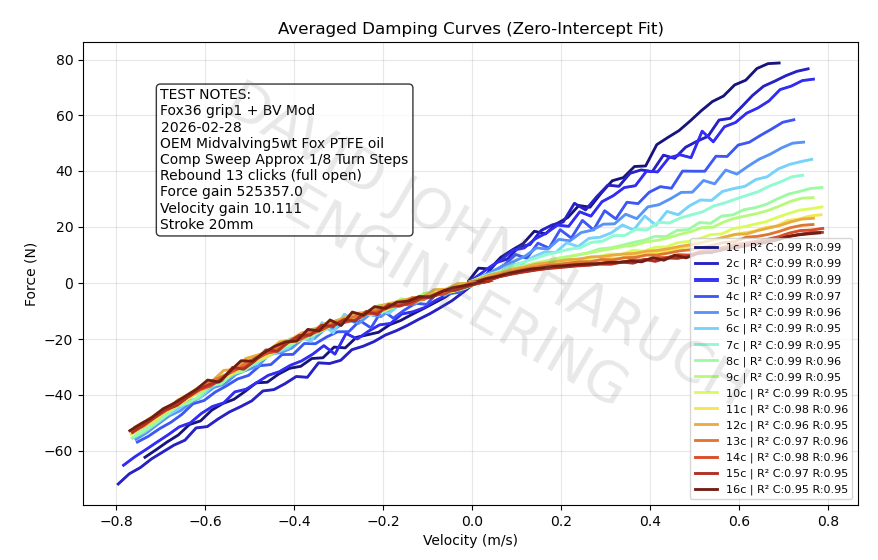
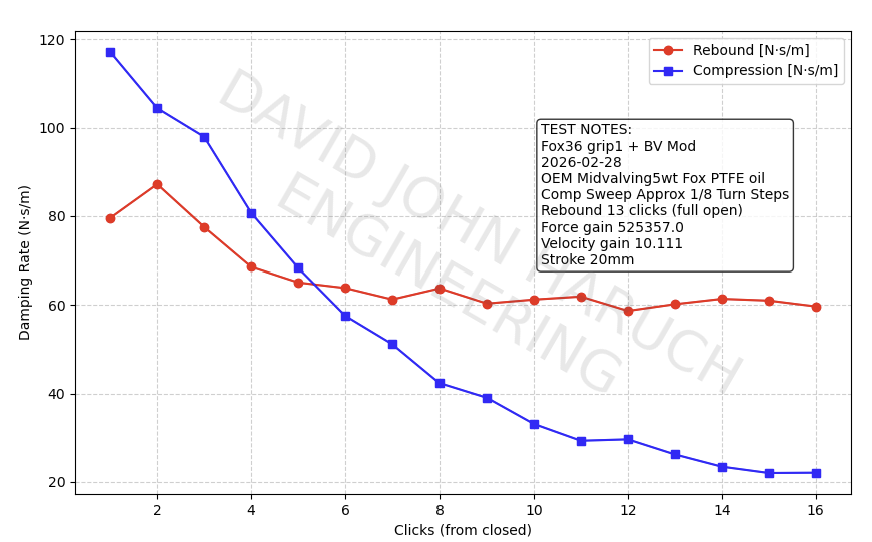
Rebound clicker sweep
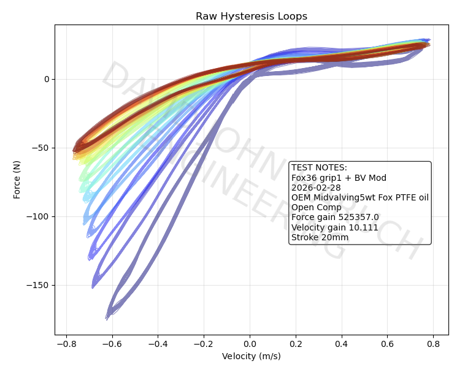
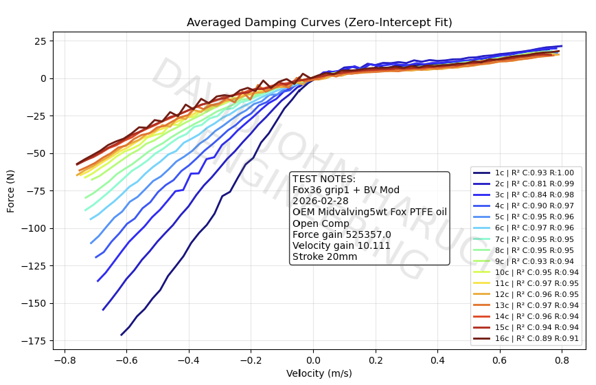
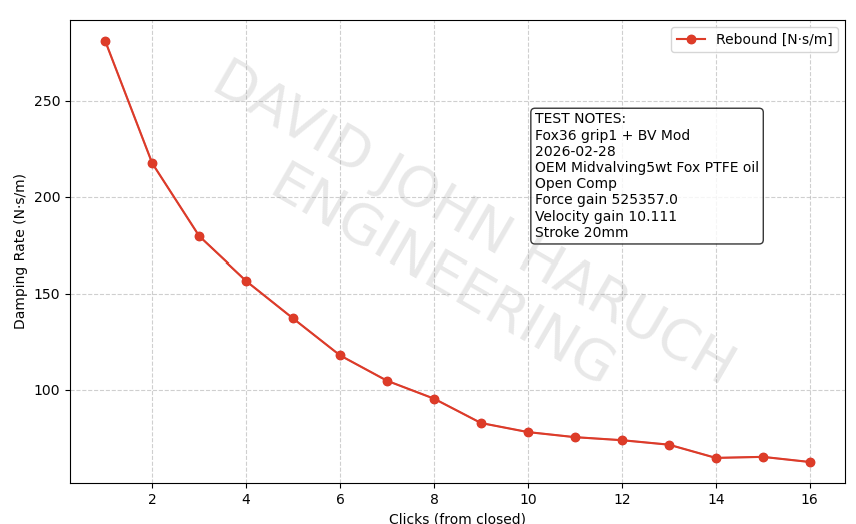
Coulomb Friction
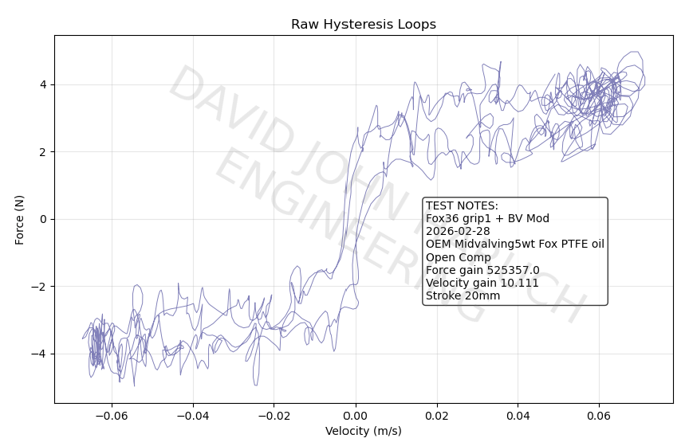
Jank Dyno Setup Photo
More details coming in another web-page. Lathe as motor, crank mechanism 3d printed, el-cheapo china linear guide, 3d print damper mountings, el-cheapo 300kg china load cell, DIY magnet+coil velocity transducer (with good metrology loop :-) ), LABJACK T7 DAQ Box. Python software written using "Google Gemini 3" AI code
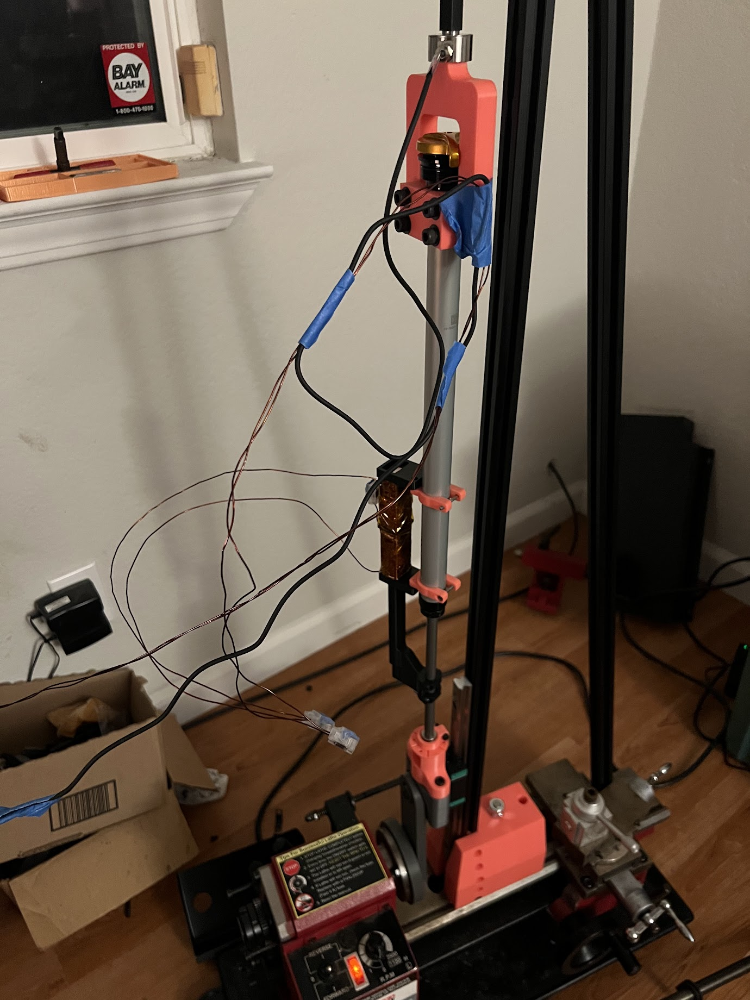